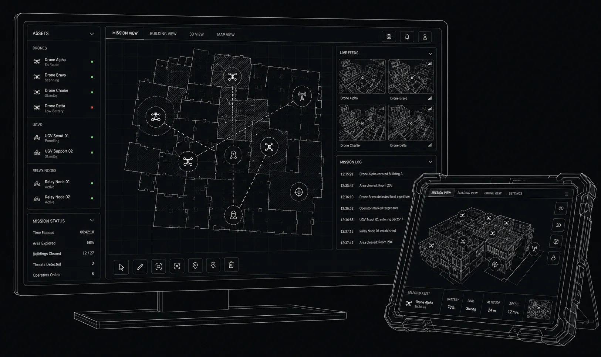
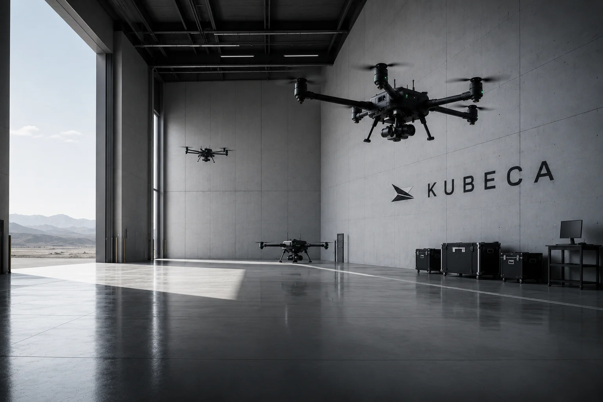

01 / The connected system
From individual aircraft.
To a shared mission.
Aircraft, local drones, and command software. We are developing the connections that bring them together under human supervision.
View system details
02 / Command & control
One view.
Human direction.
C2 software connects the operator to the aircraft and mission. Explore the interface direction behind our connected system.
View C2 software details
03 / Fixed-wing platform
The reach
behind the mission.
Our fixed-wing development brings airframe design and aircraft software together as the foundation of the carrier-system vision.
View fixed-wing details
04 / Local autonomy
A closer view.
A wider understanding.
Quadcopter autonomy begins with focused simulation and iteration. See how this work fits into the larger aerial architecture.
View quadcopter details